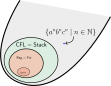

A Pumping Lemma for Context-free Languages
Let's start with a simple exercise.
Something got in your way. What was it? Well, as you might be able to glean from the tone of that exercise, it is not possible to recognize \(\{a^nb^nc^n \mid n \in \mathbb N\}\) with a context-free grammar (or equivalently, with a sytack automaton). This language lies outside of \(\mathsf{CFL}\)! 
But don't take my word for it. We are going to spend today developing a technique for proving that a given language is not context-free. Taking some inspiration from the last time we showed that a language was not in a particular family, we are going to establish a property that every context-free language satisfies but \(L_{abc}\) does not. In fact, the property itself looks a lot like the previous one, too. Not every context-free language has a pumping length (for eg., \(\{a^nb^n \mid \mathbb N\}\))... but what about a double pumping length?
- \(w = u_1 p_1 u_2 p_2 u_3\) (\(w\) breaks up into \(u_1, u_2, u_3, p_1, p_2\))
- either \(p_1 \neq \varepsilon\) or \(p_2 \neq \varepsilon\) (at least one of the pumps is nonempty)
- \(|p_1 u_2 p_2| \le \ell\) (the middle section has at most \(\ell\) letters)
- for any \(k \in \mathbb N\), \(u_1p_1^k u_2p_2^k u_3 \in L\) (\(p_1\) and \(p_2\) can be simultaneously pumped)
There are a lot of moving parts here, so let's take a look at an example.
- \(L_1 = \{a^nb^{2n} \mid n \in \mathbb N\}\)
- \(L_2 = \{a^nb^{m}c^{n+m} \mid n,m \in \mathbb N\}\)
- \(L_3 = \{ww^{op} \mid w \in A^*\}\) (these are the even length palindromes)
As you might have expected, every context-free language has a double pumping length.
We will talk about the proof a little bit later---the proof makes use of parse trees, actually. For now let's get a bit of practice using the Double Pumping Theorem in.
- \(w = u_1 p_1 u_2 p_2 u_3\) (\(w\) breaks up into \(u_1, u_2, u_3, p_1, p_2\))
- either \(p_1 \neq \varepsilon\) or \(p_2 \neq \varepsilon\) (at least one of the pumps is nonempty)
- \(|p_1 u_2 p_2| \le \ell\) (the middle section has at most \(\ell\) letters)
- In the first scenario, \(p_1u_2p_2\) entirely consists of \(a\)s: \[ \overbrace{aa}^{u_1}~ \overbrace{a\cdots a}^{p_1 u_2 p_2}~ \overbrace{aaaabbb\cdots bbbccc\cdots ccc}^{u_3} \] In this case, we can find \(i,j,k,l\) such that \(u_1 = a^i\), \(p_1 = a^j\), \(u_2 = a^k\), \(p_2 = a^l\). Then \[ w = a^i~a^j~a^k~a^l~a^{\ell - (i + j + k + l)} ~b^\ell~c^\ell \] and therefore, \[\begin{aligned} u_1~p_1^2~u_2~p_2^2~u_3 = a^i~(a^j)^2~a^k~(a^l)^2~a^{\ell - (i + j + k + l)} ~b^\ell~c^\ell && \text{(*)} \end{aligned}\] The number of \(a\)s in this word is \[ i + 2j + k + 2l + \ell - (i + j + k + l) = j + l + \ell \] Since either \(p_1 \neq \varepsilon\) or \(p_2 \neq \varepsilon\), \(j + l = |p_1| + |p_2| > 0\). This means that the number of \(a\)s in (*) is \[ j + l + \ell > \ell \] Therefore, \(u_1~p_1^2~u_2~p_2^2~u_3 \notin L_{abc}\).
- In the second scenario, \(p_1u_2p_2\) entirely consists of \(b\)s: \[ \overbrace{aaa\cdots aaabb}^{u_1}~ \overbrace{b \cdots b}^{p_1 u_2 p_2}~ \overbrace{bb\cdots bbbccc\cdots ccc}^{u_3} \] This scenario is the same as scenario A with \(b\)s instead of \(a\)s.
- In the third scenario, \(p_1u_2p_2\) entirely consists of \(c\)s: \[ \overbrace{aaa\cdots abbb \cdots bbbcc}^{u_1}~ \overbrace{c \cdots c}^{p_1 u_2 p_2}~ \overbrace{cc}^{u_3} \] This scenario is the same as scenario A with \(c\)s instead of \(a\)s.
- In the fourth scenario, \(p_1u_2p_2\) consists of \(a\)s and \(b\)s but no \(c\)s: \[ \overbrace{aa}^{u_1}~ \overbrace{a\cdots aaabbb \cdots b}^{p_1 u_2 p_2}~ \overbrace{bbccc\cdots ccc}^{u_3} \]
- \(L_1 = \{w \in \{a,b,c\}^* \mid \text{\(w\) has the same number of \(a\)s, \(b\)s, and \(c\)s}\}\)
- \(L_2 = \{a^n b a^n b a^n \mid n \in \mathbb N\}\)
Proof of the Double Pumping Theorem
When we proved the Pumping Lemma for regular languages, we went through automata: finding a loop in an automaton that corresponded to a subword that can can be pumped. Proving the Double Pumping Theorem is a bit different: this time we are going to look for subtrees of a given parse tree that can be "repeated" to obtain a new, taller parse tree.
To determine a double pumping length for \(L\), find the longest monomial expression \(\mu\) such that there is a derivation rule \(y \to \mu\) for some variable \(y \in X\), and let \(m = |\mu|\). Then every node in a parse tree rooted at some variable of \(\mathcal G\) has to have at most \(m\) children (otherwise, there would be a rule \(y \to |\mu'|\) with \(\mu'\) longer than \(\mu\)). It follows that a parse tree in \(\mathcal G\) of height \(h > 1\) can have at most \(m^h\) leaves (count the number of leaves in an \(m\)-branching tree with height \(h\)). This little bit of counting is how we are going to produce a double pumping length for the languages derived from \(\mathcal G\).
Write \(n = |X|\) for the number of variabels in \(X\). Suppose you were given a word \(w\) of length \(|w| \ge m^{n + 2}\), where \(m\) is the longest word appearing in a derivation rule of \(\mathcal G\). Now let \(T\) be a smallest parse tree for \(w\) in \(\mathcal G\) rooted at \(x\) (the "smallest" part will come up later---it just means that no rewrite steps went to waste). Consider the tree \(T'\), which we obtain by deleting every subtree of \(T\) that only has leaves labelled with \(\varepsilon\). Then \(T'\) must have exactly \(|w|\) leaves, because its leaves are labelled with the letters of \(w\). But \(|w| \ge m^{n+2}\), so this means that the height of \(T'\) has to be at least \(n + 2\), which is two more than the number of variables in \(X\)! It follows that there is a branch of \(T'\), starting from the root node \(x\) and ending at a leaf of \(T'\), that has at least \(n+1\) nodes labelled with variables. This means that along this branch, one of the variables of \(\mathcal G\) must appear twice in \(T'\). This motivates us to choose the number \[ \ell = m^{n + 2} \] as our prospective pumping length, since we are now in the business of using this branch to find a pair of words to simultaneously pump in \(w\).
Now, along the branch of length \(\ge n + 1\), one of the variables of \(\mathcal G\) must appear twice in \(T'\). We can therefore break \(w\) up into five segments, as illustrated in the figure below.
In this diagram, the outer triangle is a parse tree rooted at the variable \(x\) in \(\mathcal G\). The lightening-strike in the middle is the path (originally through \(T'\)) starting from the root node where the variable \(y\) appears twice. The pink triangle represents the subtree \(S\) of \(T\) that is rooted at the first \(y\) encountered in the path, and the blue triangle represents the subtree \(V\) rooted at the second instance of \(y\) in the path. The leaves of the tree can now be organized into five groups: from left to right,
- the leaves of \(T\) that are strictly to the left of the leaves of \(S\), which we concatenate to form \(u_1\),
- the leaves of \(S\) that are strictly to the left of the leaves of \(V\), which we concatenate to form \(p_1\),
- the leaves of \(V\), which we concatenate to form the word \(u_2\),
- the leaves of \(S\) that are strictly to the right of the leaves of \(V\), which we concatenate to form \(p_2\),
- the leaves of \(T\) that are strictly to the right of the leaves of \(S\), which we concatenate to form \(u_3\).
We have successfully verified that \(\ell\) is a double pumping length for \(L\).